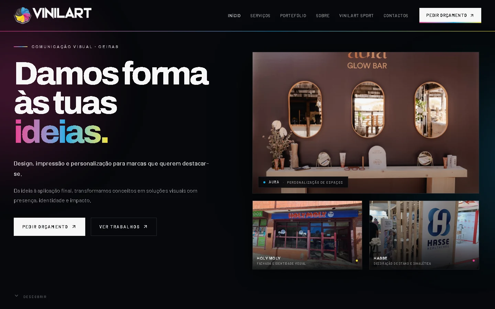

← Voltar ao portefólio
Projeto NWS / Caso de estudo
VinilArt.
Uma presença digital para apresentar serviços de comunicação visual, impressão e personalização.

Projeto desenvolvido pela Nova Web Studio. Conteúdo apresentado como caso de estudo, sem métricas inventadas.
O contextoVer website ao vivo ↗
Projetos diferentes. Respostas à medida.
Organizar a oferta e traduzir o universo criativo da empresa numa apresentação digital coerente.
ÁreaWebsite e comunicação visual
EstúdioNova Web Studio
A solução
O que foi desenvolvido.
Website com identidade forte, secções de serviços e caminhos de navegação para os principais conteúdos da marca.
- ↗ Apresentação de serviços
- ↗ Identidade visual própria
- ↗ Navegação organizada
- ↗ Experiência adaptável
Gostavas de algo semelhante?O próximo
Falar sobre um projeto ↗